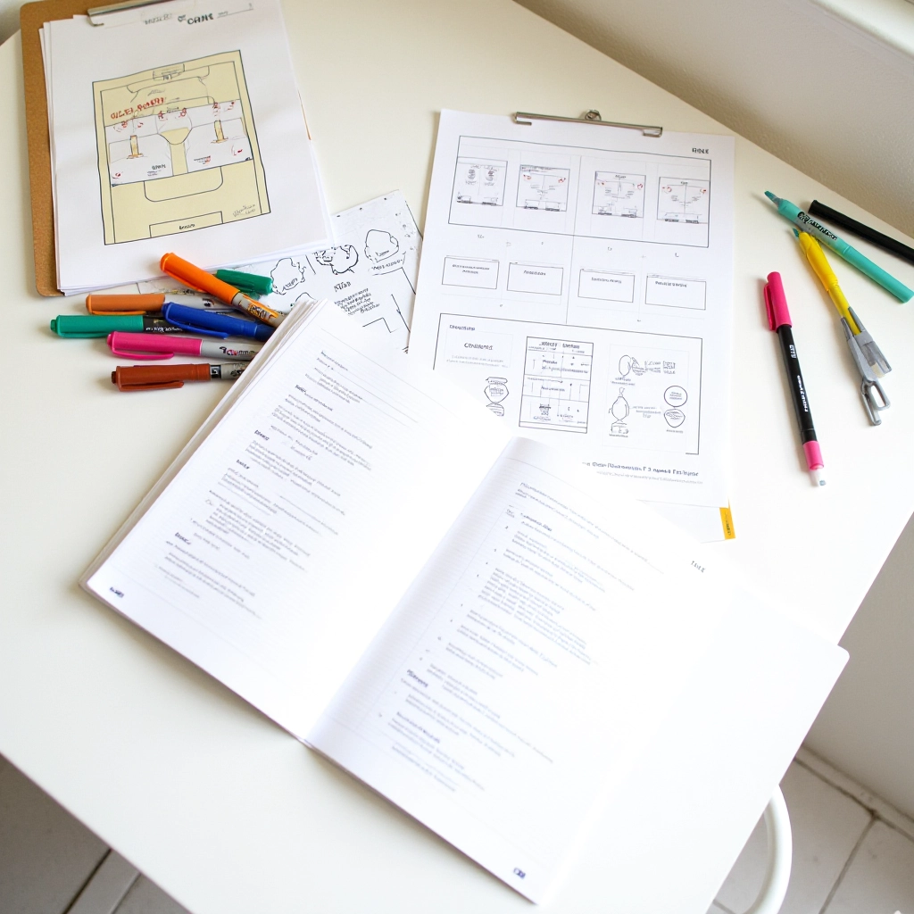

فريق الدوران الذهبي التحريري
نحن نعمل على شرح قواعد الدوران والتبديل في الكرة الطائرة بوضوح وسهولة
من نحن
لماذا نوجد هنا
نحن فريق صغير لكن مركّز. نعمل على موضوع واحد فقط: قواعد الدوران والتبديل في الكرة الطائرة. اخترنا هذا المجال لأنه مهم فعلاً — لاعبون، مدربون، ومشجعون يسألون عن هذه القواعس كل يوم، وغالباً ما تكون الإجابات إما معقّدة أو ناقصة.
ما نفعله بسيط: نجمع المعلومات الصحيحة، نتحقق من كل تفصيل، ونشرحها بطريقة يمكن أن يفهمها الجميع. لا نكتب عن كل شيء في الكرة الطائرة — فقط ما نعرفه جيداً ونستطيع شرحه بوضوح.
نؤمن بالصراحة. إذا كانت هناك استثناءات للقاعدة، نقول ذلك. إذا تغيرت القواعس، نحدّث الدليل. ونحاول دائماً أن نتذكّر أن الشخص الذي يقرأ هذا قد يكون مشبوهاً من الشروحات المعقّدة — فنبدأ من الأساسيات.
عملية العمل
كيف نصنع المحتوى
نتبع نفس العملية لكل دليل وشرح. الهدف هو الوضوح والدقة معاً.
البحث
نبدأ بجمع المعلومات من مصادر موثوقة. نقرأ القواعس الرسمية، نراجع الشروحات الموجودة، ونفكر في الأسئلة التي قد يسألها القارئ.
التدقيق
نتحقق من كل تفصيل. هل هذه القاعدة صحيحة فعلاً؟ هل الاستثناءات مذكورة؟ هل هناك حالات خاصة؟ نسأل الأسئلة الصعبة قبل أن نكتب.
الكتابة الواضحة
نكتب كما نتحدث. بلا تعقيد غير ضروري. نبدأ من الأساس ونصعد تدريجياً. نستخدم أمثلة حقيقية لتوضيح القواعس.
المراجعة والتحديث
المحتوى لا ينتهي عند النشر. نراجع الأدلة بانتظام، ونبحث عن أي قواعس تغيّرت، ونضيف معلومات جديدة عندما نتعلم شيئاً.
ماذا نغطيه
المواضيع التي نركز عليها
أساسيات الدوران
شرح نظام الدوران الأساسي في الكرة الطائرة. كيف يتحرك اللاعبون؟ متى يتم الدوران؟ ما هي المراكز الستة؟ نبدأ من هنا.
قواعد التبديل
متى تستطيع أن تستبدل لاعباً؟ كم عدد التبديلات المسموحة؟ ماذا يحدث إذا أخطأت؟ نشرح القواعس الكاملة والاستثناءات.
الأخطاء الشائعة
ما الذي يخطئ فيه الناس كثيراً؟ أخطاء الدوران، أخطاء التبديل، سوء الفهم حول القواعس. نحن نوضح الالتباسات الشائعة.
استراتيجيات متقدمة
بعد فهم الأساسيات، يأتي السؤال: كيف تستخدم هذه القواعس لمصلحتك؟ نناقش التكتيكات والتوقيت والتخطيط الاستراتيجي.
أسئلة محددة
ماذا إذا حدث هذا الموقف بالضبط؟ نجيب على الأسئلة المحددة والحالات الخاصة. الحياة الحقيقية نادراً ما تكون مباشرة.
مراجع وموارد
أين تذهب لتتعلم أكثر؟ نشارك المصادر الموثوقة والكتب والقواعس الرسمية. لا نحتفظ بالمعلومات — نشاركها.
مبادئنا
كيف نعمل
الدقة أولاً
نحن لا نخمّن. كل حقيقة مدعومة بمصدر موثوق. إذا لم نكن متأكدين، نقول ذلك. الثقة تُبنى على الصراحة.
الوضوح دائماً
المحتوى المعقّد لا يساعد أحداً. نكتب لشخص يسأل السؤال للمرة الأولى. لا نفترض معرفة مسبقة. الجملة الواضحة أفضل من الجملة الذكية.
التحديث المستمر
الكرة الطائرة تتطور. القواعس تتغيّر. نراجع محتوانا بانتظام ونحدّثه. الدليل الذي كتبناه قبل سنة قد لا يكون صحيحاً اليوم.
التركيز الضيق
نحن لا نكتب عن كل شيء. نركز على الدوران والتبديل. هذا يعني أننا نستطيع أن نكون عميقين وشاملين بدلاً من سطحيين وعامين.
هل أنت جاهز للتعمق؟
استكشف الأدلة الكاملة، تعلم القواعس بالتفصيل، واكتشف الاستراتيجيات التي تحسّن اللعبة.
بالأرقام
ما أنجزنا
أدلة شاملة منشورة
صفحات محتوى كامل
سنة البداية
التحديث والمراجعة
تواصل معنا
لديك سؤال؟ اطرحه
هل هناك موضوع تود أن نغطيه؟ هل لاحظت خطأ؟ أم أن لديك تعليقات على الأدلة؟ نحن نستمع.
يمكنك التواصل معنا مباشرة من خلال صفحة التواصل. نجيب على جميع الأسئلة والاقتراحات. قد تستغرق الإجابة بضعة أيام، لكننا نقرأ كل رسالة.
انتقل إلى صفحة التواصل